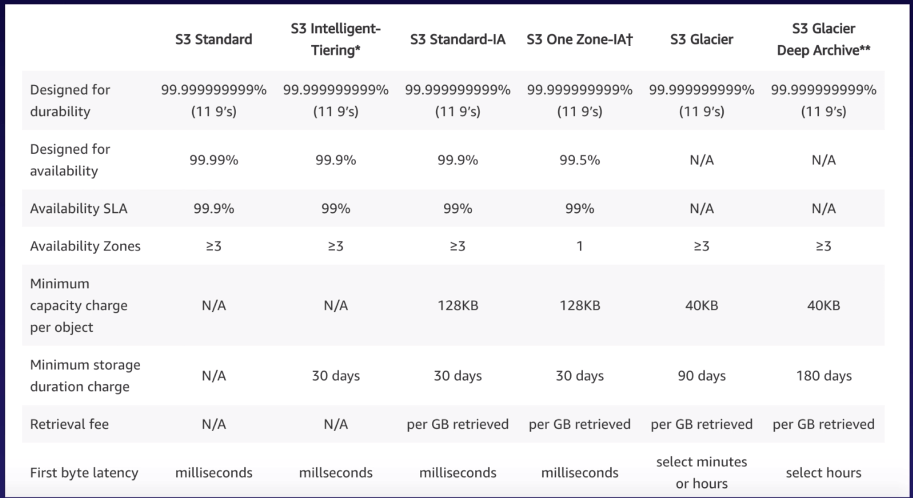
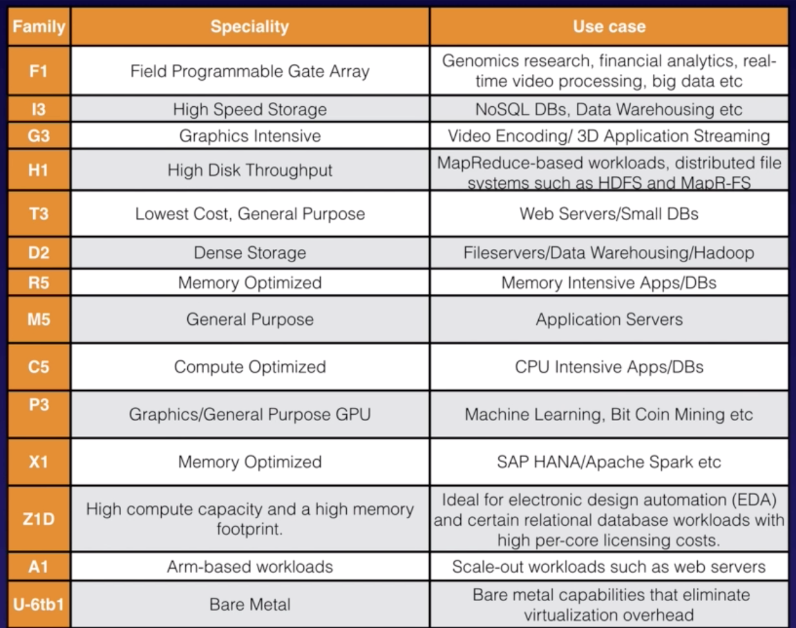
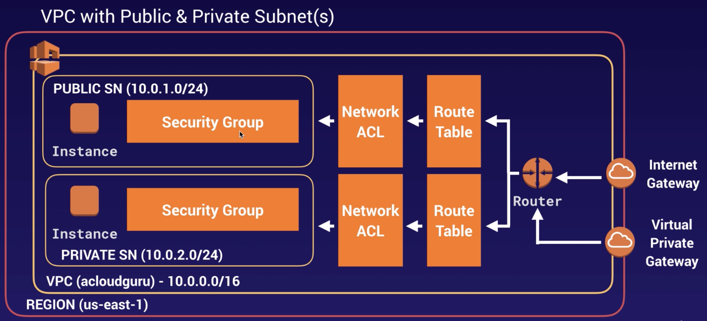

AWS Solution Architect Summary
The Basics: Regions, Availability Zones, Edge Locations
Number of Edge Locations > Number of Availability zones > Number of regions
A region is a physical location spread across globe to host your data to reduce latency. In each region there will be at least two availability zones.
An availability zone is a datacenter that does not need to be separated by multiple kilometers physically but by meters with in a physical compound which are completely isolated from each other failure such as power, network in a given AZ.
An edge location is where end users access services located at AWS. A site that CloudFront uses to cache copies of your content for faster delivery to users at any location. Edge locations serve requests for CloudFront and Route 53. Requests going to either one of these services will be routed to the nearest edge location automatically.
IAM: Identity Access Management
Manage users and their level of access to AWS Console. The basics:
Allow very granular permissions to leverage the user access.
Identify Federation (including Activate Directory, Facebook, Linkedin, etc).
The “root account” is simply the account created when first setup your AWS ccount. It has complete Admin access.
Multifactor Authentication. We should setup the Multifactor authentication for “root account”s.
Password policies
IAM is universal. It does not apply to regions at this time.
New Users have no permissions at the beginning. These can be granted to access via web or programmatically or both. When programmatically, they need to be assigned an Access Key ID & Secret Access Keys.
Users can be organised in Groups of people. Policy is a set of JSON documents with the permissions. Policies can be grouped in Roles. We can create new roles as needed. Then, either Users or Groups can be attached to Policies or Roles.
How to create a Role
IAM > Roles > Create Role
Choose the service that will use this role
Attach policies
Roles are more secure than storing your access key and secret access key on individual EC2 instances.
Roles are easier to manage.
Roles can be assigned to an EC2 instance after it is created using both the console and command line.
Roles are universal - you can use them in any region.
Create a billing alarm
Go to My Account > Billing Dashboard > Billing Preferences
Enable Receive Billing Alarts
Then, go to Services > Cloud Watch > Billing
Fill the Billing alarm section (with the amount of dollars)
AWS Command Line
> sudo su
> aws configue
AWS Access Key ID: xxx
AWS Secret Access Key: YYY
Default region name: zzz
Default output format:
> aws s3 ls -> see the list of buckets in S3
> aws s3 mb s3://testbucket -> make bucket S3
Secure, durable, highly-scalable object storage. The basics:
S3 is Object-based. An object is a key (the name), value (the content of the file in bytes), a version ID (important for versioning), some metadata and other subresources (like access control lists and torrent).
Files can be from 0 Bytes to 5 TB.
There is unlimited storage.
The objects are organised in buckets, that are like folders. The bucket name must be unique globally.
The objects are directly available when adding new objects, but there will be eventual consistencies on updates (PUTS and DELETES).
99.9(…)% availability and 99.9999999999 durability.
Tiered Storage available: Store objects in different tiers with different availability configuration (to save up money).
Lifecycle Management: it allows to move your objects in different tiers depending on the activity and time windows to save up money. It also can be used to configure expiration.
Versioning: Have multiple versions of objects. Once enabled versioning, it cannot be disabled.
Encryption: SSL/TLS (transport connection). SS3-S3 (server side encryption)
MultiFactor authentitcation for deleting objects
Secure your data using access control lists or using bucket policies.
Storage Classes
S3 Standard
S3 IA: Infrequently Accessed but requires rapid access. Lower fee then standard, but you’re charged a retrieval fee.
S3 One Zone - IA: Infrequently Accessed and do not require the multiple availability zones. Lowest option.
S3 Intelligent Tiering: Use machine learning to configure the objects around storage classes to the most cost-effective option.
S3 Glacier: For data archiving. Secure, durable, low-cost storage. Retrieval times configurable from minutes to hours.
S3 Glacier Deep Archive: Same as above but it allows retrieval times of 12 hours.

Transfer Acceleration
Amazon S3 Transfer Acceleration enables fast, easy, and secure transfer of files over long distances between your end users and an S3 bucket. It takes advantage of Amazon CloudFront’s globally distributed edge locations: as the data arrives at an edge location, data is routed to Amazon S3 over an optimized network path.
Security
We can configure S3 to log who is accessing the objects. Secure your data using access control lists or using bucket policies.
We can encrypt by:
Encryption In Transit: SSL/TLS
Encryption At Rest (Server Side) via (1) S3 Managed Keys - SSE-S3, (2) AWS Key Management Service - SS3-KMS, or (3) Server Side Encryption with customer - SS3-C (you provide the keys).
Client Side Encryption
Cross Region Replication
In order to replicate your data in different regions.
Create bucket
Go to Management and Replication
Enable versioning (it must be enabled in both source and destination)
Set Source and Destination
Configuration options: select/create the role
Files in an existing bucket and delete markers (or versions) are not replicated automatically. It only works for new files.
Pricing
By Storage class
By Requests
By Storage Management Pricing
By Data Transfer Pricing
By Transfer Acceleration
By Cross Region Replication Pricing
CloudFront
A content delivery network (CDN) is a system of distributed servers (network) that deliver webpages and other web content to a user based on the geographic locations of the user, the origin of the webpage, and a content delivery server.
Edge Location: where content will be cached (using a TTL - Time To Live). We can clear cached objects, but we will be charged.
Origin: This is the origin of all the files that the CDN will distribute. This can be an S3 bucket, an EC2 instance, an Elastic Load Balancer, or Route53.
Distribution: This is the name given the CDN which consists of a collection of Edge Locations.
Types: (1) Web Distribution: To route whole websites; and (2) RTMP: Used for Media Streaming.
Storage Gateway
Service that connects an on-premises software appliance with cloud-based storage to provide seamless and secure integration between an organization’s on-premises IT environment and AWS’s storage infrastructure. The service enables you to securely store data to the AWS cloud for scalable and cost-effective storage.
| Type | Description |
|---|---|
| File Gateway (NFS) | Files are stored as objects in your S3 buckets, accessed throught a NFS mount point. |
| Volume Gateway (iSCSI) | Same using virtual directories via iSCSI block protocol. Files are stored in the cloud as Amazon EBS snapshots. Two types: (1) Stored volumnes and (2) Cached volumes. |
| Type Gateway (VTL) | It offers durable, cost-effective solution to archive your data in the AWS Cloud (same mecanism as Volume Gateway). |
EC2: Elastic Compute Cloud
EC2 is a web service that provides resizable compute capacity in the cloud. It reduces the time required to obtain and boot new server instances to minutes, allowing you to quickly scale capacity, both up and down, as your computing requirements change.
Termination Protection: Disabled by default. We need to enable it in order to prevent our EC2 instance is accidentally shutdown.
By default, the EC2 is linked to a EBS volume that will be deleted when the instance is terminated. This default volume can’t be encrypted. But we can add additional volumes that can be encrypted.
About security groups: All Inbound traffic is blocked by default. All outbound traffic is allowed. Changes to Security Groups take effect immediately. The security groups can be shared by different EC2 instances. We cannot configure with deny rules, only allow rules (in order to block IP addresses, we need to use Network Access Control Lists).
Metadata: useful to get information about an instance (curl http://ec-ip/latest/meta-data). Also to get user data (curl http://ec-ip/latest/user-data).
We can enable auto scaling group: when creating a EC2 instance, we can define the number of instances to scale up and the subnets.
Pricing
| Type | Description | Use Cases |
|---|---|---|
| On Demand | Fixed rate by the hour (or by the second) | Low cost and flexibility. (1) Applications with short term, spiky or unpredictable workloads that cannot be interrupted. (2) Applications being developed or tested for the first time. |
| Reserved: Standard or Convertible or Scheduled | Provides you with a capacity reservation, and offer a significant discount on the hourly charge for an instance. Contract terms are 1 year or 3 years. | (1) Applications with steady state or predictable usage. (2) Applications that require reserved capacity. (3) Users able to male upfront payments to reduce their total computing costs even further. |
| Spot | Enables you to bid whatever price you want for instance capacity, providing for even greater savings if your applications have flexible start and end times. | (1) Applications that have flexible start and end times. (2) Applications that are only feasible at very low compute prices. (3) Users with urgent computing needs for large amounts of additional capacity. |
| Dedicated hosts | Physical EC2 server dedicated. It can help you reduce costs by allowing you to use your existing server-bound software licenses. It can be purchased On-Demand (hourly) or as a reservation for up to 70% off the On-Demand price. | (1) Useful for regulatory requirements that may not support multi-tenant virtualization. (2) Great for licensing which does not support multi-tenancy or cloud deployments. |
Instance Types

This won’t be part of the exam. The summary is:
F: For FPGA
I: For IOPS
G: Graphics
H: High Disk Throughput
T: Cheap general purpose
D: For Density
R: For RAM
M: Main choice for general purpose apps
C: For Compute
P: Graphics (think Pics)
X: Extreme Memory
Z: Extreme Memory and CPU
A: ARM-Based workloads
U: Bare Metal
Placement Groups
The name of placement groups must be unique within your AWS account. Only certain types of instances can be launched in a placement group: compute optimized, GPU, memory optimized and storage optimized. We can’t move existing instances into a placement group (they must be selected when are being created).
Clustered Placement Group: group instances within a single availability zone. This is recommended for applications that need low network latency, high network throughput or both. Only certain instances can be launched in this mode.
Spread Placement Group: This is the opposite. Instances that are each placed on distinct underlying hardware. This is recommended for applications that have a small number of critical instances that should be kept separate from each other.
ELB: Load Balancing
There are three types: application (smarter option to operate at request level), network (ultra-high performance to operate at connection level - 4, this is the more expensive option) and classic load balancers. It’s important to configure health checks properly.
When a EC2 does not respond within the idle timeout, the load balancer will return 504 Gateway timeout.
If you need the IPv4 address of your end user, look for the X-Forwarded-For header.
Instances monitored by ELB are reported as InService or OutOfService.
HealthChecks check the instance health by talking to it
Load Balancers have their own DNE name. You are never given an IP address.
More concepts:
Sticky sessions
Cross Zone Load Balancing
Path Patterns
EBS: Elastic Block Store
EBS provides persistent block storage volumes for use with EC2 instances. EBS volume is like a virtual hard disk in the cloud. Each EBS volume is automatically replicated within its availability zone to protect you from component failure, offering high availability and durability.
We can create snapshots on S3: point in time of Volumes. Snapshots are also incremental which means that only the blocks that have changed since your last snapshot are moved to S3. In order to create a snapshot for EBS that serve as root devices, you should stop the instance before taking the snapshot. We can create AMI’s from both volumes and snapshots.
Snapshots of encrypted volumes are encrypted automatically. Volumes restored from encrypted snapshots are encrypted automatically. Only unencrypted snapshots can be shared. These snapshots can be shared with other AWS accounts or made public.
We can change the EBS volume size or the storage type on the fly.
EBS Volumes will always be in the same availability zone as the EC2 instance.
Storage Types:
| Type | Description | Use Cases | API Name | Volume Size | Max. IOPS / Volume |
|---|---|---|---|---|---|
| General Purpose (SSD) | General purpose that balances price and performance | Most work loads | gp2 | 1GB-16TB | 16000 |
| Provisioned IOPS (SSD) | Highest-performance SSD for mission-critical applications | Databases | io1 | 4GB-16TB | 64000 |
| Throughput Optimised Hard Disk Drive | Low cost HDD for freq. accessed, throughput-intensive workloads | Big Data & Data warehouses | st1 | 500GB-16TB | 500 |
| Cold HDD | Lowest cost HDD for less freq. accessed workloads | File Servers | sc1 | 500GB - 16TB | 250 |
| EBS Magnetic | Previous generation HDD | Workloads where data is infreq. accessed | Standard | 1GB-1TB | 40-200 |
EBS-Backed Versus Instance Store
An instance store provides temporary block-level storage for your instance. Instance Store Volumes are sometimes called Ephemeral Storage. This storage is located on disks that are physically attached to the host computer. Instance store is ideal for temporary storage of information that changes frequently, such as buffers, caches, scratch data, and other temporary content, or for data that is replicated across a fleet of instances, such as a load-balanced pool of web servers.
- Instance store volumes cannot be stopped. If the underlying host fails, you will lose your data.
An “EBS-backed” instance is an EC2 instance which uses an EBS volume as it’s root device. EBS volumes are redundant, “virtual” drives, which are not tied to any particular hardware, however they are restricted to a particular EC2 availability zone. This means that an EBS volume can move from one piece of hardware to another within the same availability zone. You can think of EBS volumes as a kind of Network Attached Storage.
If the virtual machine’s hardware fails, the EBS volume can simply be moved to another virtual machine and re-launched. In theory, you won’t lose any data.
Another benefit is that EBS volumes can easily be backed up and duplicated. So you can take easy backup snapshots of your volumes, create new volumes and launch new EC2 instances based on those duplicate volumes.
EBS backed instances can be stopped. You won’t lose the data on this instance if it is stopped.
By default, both root volumes will be deleted on termination. However, with EBS volumes, you can tell AWS to keep the device volume.
EFS: Elastic File System
Elastic File System is a file storage service for EC2 instances. EFS is easy to use and provides a simple interface that allows you to create and configure file systems quickly and easily. With EFS, storage capacity is elastic, growing and shrinking automatically as you add and remove files, so your applications have the storage they need, when they need it.
Once EC2 is created, we need to mount the EFS disks:
- TLS mount for encrypted option
mount -t efs -o tls fs-xxxx:/ /target It also supports network file system version 4 (NFSv4).
We only pay for the storage you use (no pre-provisioning required).
Can scale up to petabytes.
Can support thousands of concurrent NFS connections.
Data is stored across multiple AZ’s within a region.
Read After Write Consistency. (No eventual consistency)
CloudWatch: Monitoring
CloudWatch is a monitoring service to monitor your AWS resources, as well as the applications that you run on AWS. Metrics like CPU, network, disk, status check.
CloudWatch is about monitoring performance.
CloudWatch with EC2 will monitor events every 5 minutes by default.
You can have 1 minute intervals by turning on detailed monitoring.
You can create CloudWatch alams which trigger notifications.
Dashboards: Creates awesome dashboards to see what is happening with your AWS environment.
Alamrs: Allows you to set Alarms that notify you when particular thresholds are hit.
Events: Helps you to responde to state changes in your AWS resources.
Logs: Aggregates log data.
CloudTrail: Auditing
AWS CloudTrail increases visibility into your user and resource activity by recording AWS Management Console actions and API calls. You can identify which users and accounts called AWS, the source IP address from which the calls were made, and when the calls occurred.
RDS: Relational Database Service
At the moment, RDS supports the next database engines: SQL Server, Oracle, MySQL, PostgreSQL, Aurora, MariaDB. The main features in RDS are:
Multi-AZ for disaster recovery. It’s only supported for MySQL, Oracle, SQL Server, PostgreSQL, and MariaDB.
Read replicas for performance: we can configure our instances to point out to any other read replicas to spread out the connections. It’s only supported for MySQL, PostgreSQL, MariaDB and Aurora; and needs to have the backup policy turned on. Each replica will have its own DNE endpoint and we can create read replicas of Multi-AZ source database. Read replicas can be promoted to be their own databases which breaks the replication. We can have a read replica in a second region.
For caching, we need to use Amazon ElastiCache that is implemented by memcached or redis.
RDS runs on virtual machines (it’s not serverless - but Aurora), but we cannot have access on them.
Encryption At Rest using AWS KMS. It’s only supported for MySQL, Oracle, SQL Server, PostgreSQL, MariaDB and Aurora. Backups, replicas and snapshots will be encrypted as well.
Backups
Automated backups allow you to recover your database to any point in time within a “retention period”. The retention period can be between one and 35 days. Automated backups will take a full daily snapshot and will also store transaction logs throughout the day. When you do a recovery, AWS will first choose the most recent daily back up, and then apply transaction logs relevant to that day. This allows you to do a point in time recovery down to a second, within the retention period.
Automated backups are enabled by default. The backup data is stored in S3 and you get free storage space equal to the size of your database. So if you have and RDS instance of 10GB, you will get 10GB worth of storage.
Backups are taken within a defined window, storage I/O may be suspended while your data is being backed up and you may experience elevated latency.
Snapshots
Database snapshots are done manually. They are stored even after you delete the original RDS instance, unlike automated backups.
Restoring
Whenever you restore either a backup or a snapshot, the restored version of the database will be a new RDS instance with a new DNS endpoint.
Aurora
Amazon Aurora is a MySQL-compatible relational database that combines the speed and availability of high-end commercial databases with the simplicity and cost-effectiveness of open source database. It provides up to five times better performance than MySQL at better price for similar performance.
Start with 10GB, scales in 10GB increments to 64TB (storage autoscaling).
Compute resources can scale up to 32vCPUs and 244GB of Memory. It is designed to transparently handle the loss of up to two copies of data without affecting database write availability and up to three copies without affecting read availability.
It always maintain 2 copies in each availability zone with a minimum of 3 availability zones. 6 copies of your data.
Aurora storage is also self-healing. Data blocks and disks are continuously scanned for errors and automatically repaired.
Backups are always enabled and do not impact on database performance.
We can take snapshots and share them with other AWS accounts.
2 types of replicas available: aurora replicas and MySQL replicas. Automated failover is only available with Aurora replicas.
DynamoDB: NoSQL database service
Amazon DynamoDB is a fast and flexible NoSQL database service for all applications that need consistent, single-digit millisecond latency at any scale. It’s a fully managed database and supports both document and key-value data models. Its flexible data model and reliable performance make it a great fit for mobile, web, gaming, ad-tech, IoT, and many other applications.
Stored on SSD storage.
Spread across 3 geographically distinct data centres.
Eventual Consistent Reads: enabled by default. If applications need to have the read in less than one second, we need to enable “Strongly Consistent Reads” instead.
Redshift
Amazon Redshift is a fast and powerful, fully managed, petabyte-scale data warehouse service in the cloud. Customers can start small for $0,25 per hour with no commitments or upfront costs and scale to a petabyte or more for $1,000 per terabyte per year, less than a tenth of most other data warehousing solutions.
It can be configured in single node (160GB) or multi-node (leader node and up to 128 compute nodes).
Use advanced compression: it emplays multiple compression techniques and can often achieve signiticant compression relative to traditional relational data stores using row and column both levels compression. Redshift will select the most appropiate compression schema.
It doesn’t require indexes or materialized views, and so uses less space than traditional relational database systems.
Massively Parallel Processing (MPP): it automatically distributes data and query load across all nodes.
Backup: one day retention period by default. Max retention period is 35 days. It always attempts to maintain at least three copies or your data. Redshift can also asynchronously replicate your snapshots to S3 in another region for disaster recovery.
Pricing: in compute node hours (not for leader node hours) and for backups and data transfers.
Security: always SSL encrypted and about encrypted at rest the same as in EC2.
Available only in one availability zone.
ElastiCache
Amazon ElastiCache is a web service that makes it easy to deploy, operate, and scale an in-memory cache in the cloud. **This service must be used to increase database and web application performance. The service improves the performance of web applications by allowing you to retrieve information from fast, managed, in-memory caches, instead of relying entirely on slower disk-based databases.
| Requirement | Memcached | REDIS |
|---|---|---|
| Simple Cache to offload DB | YES | YES |
| Ability to scale horizontally | YES | NO |
| Multi-Threaded performance | YES | NO |
| Advanced data types | NO | YES |
| Ranking/Sorting data sets | NO | YES |
| Pub/Sub capabilities | NO | YES |
| Persistence | NO | YES |
| Multi-AZ | NO | YES |
| Backup & Restore Capabilities | NO | YES |
Route53
Elastic Load Balancers do not have pre-defined IPv4 addresses, you resolve to them using a DNS name.
The CNAME record maps a name to another name. It should only be used when there are no other records on that name. Use a CNAME record if you want to alias one name to another name.
The ALIAS record maps a name to another name, but can coexist with other records on that name. Use an ALIAS record if you’re trying to alias the root domain (apex zone).
More commonly used DNS record types:
| Record Type | Description |
|---|---|
| A | Host Address |
| AAAA | IPv6 host address |
| ALIAS | Auto resolved alias |
| CNAME | Canonical name for an alias |
| MX | Mail eXchange |
| NS | Name Server |
| PTR | Pointer |
| SOA | Start Of Authority |
| SRV | Location of service |
| TXT | Descriptive text |
Register a new domain:
Go to Route53 > Register Domain
Search for your domain
Fill out the registrant contact
Purchase your new domain
It takes some time to register the domain… between a few hours up to 3 days.
Routing Policies
First, let’s see how to configure routing policies:
Go to Route53 > Your domain
Create Record Set
Select the DNS record type.
Also, we can set health checks on individual record sets. If a record set fails a health check it will be removed from Route53 until it passes the health check. We can set SNS notifications to alert you if health check is failing.
- Simple Routing Policy
One record with multiple IP addresses. If you specify multiple values in a record, Route53 returns all values to the user in a random order.
- Weighted Routing Policy
Allows you split your traffic based on different weights assigned. For example, you can set 10% of your traffict to go to US-EAST-1 and 90% to EU-WEST-1.
- Letancy Routing Policy
Allows you to route your traffic based on the lowest network latency for your end user (ie which region will give them the fastest response time).
To use latency-based routing, we need to create a latency resource record set for EC2 or ELB resource in each region that hosts your website.
- Fallover Routing Policy
This is used when you want to create an active/passive set up. For example, you may want your primary site to be in EU-WEST-2 and your secondary DR Site in AP-SOUTHEAST-2. Route53 will monitor the health or your primary site using health checks.
- Geolocation Routing Policy
Depending on our final users location.
- Geoproximity Routing Policy (Traffict Flow Only)
Geoproximity routing lets Route53 route traffic to your resources based on the geographic location of your users and your resources. You can also optionally choose to route more traffic or less to a given resource by specifying a value, known as a bias. A bias expands or shrinks the size of the geographic region from which traffic ir routed to a resource.
- Multivalue Answer Policy
It lets you configure Route53 to return multiple values, such as IP addresses for your web servers, in response to DNS queries. You can specify multiple values for almost any record, but multivalue answer routing also lets you check the health of each resource, so Route53 returns only values for healthy resources.
Similar to simple routing but with health checks on each record set.
VPC: Virtual Private Cloud
It lets us provision a logically isolated section of our infrastructure where we can launch AWS resources in a virtual network that we define. We have complete control over our virtual networking environment, including selection of our own IP address range, creation of subnets, and configuration of route tables and network gateways. Additionally, we can create a hardware VPN connection between our corporate datacenter and our VPC and leverage the AWS cloud as an extension of our corporative datacenter.

Launch instances into a subnet (= 1 availability zone) of your choosing
Assign custom IP address ranges in each subnet
Configure route tables between subnets
Create internet gateway and attach it to our VPC
Much better security control over your AWS resources
Instance security groups
Subnet network access control lists (ACLS)
We can conduct penetration testing without AWS engagement.
By default, only 5 VPCs are allow in each AWS Region.
In order to visualize the range of IP address, use CIDR.xyz
Default VPC vs Custom VPC
Default VPC is user friendly, allowing you to immediately deploy instances.
All Subnets in default VPC have a route out to the internet.
Each EC2 instance has both a public and private IP address.
VPC Peering (VPC <–> VPC)
Allows you to connect one VPC with another via a direct network route using private IP addresses. Instances behave as if they were on the same private network. We can peer VPC’s with other AWS accounts as well as with other VPCs in the same account. Peering is a star configuration: 1 central VPC peers with 4 others: no transitive peering!!
How-To
Go To VPC service > Your VPCs > Create VPC
Fill IPv4 CIDR block and tenancy and click on create.
No subnets and internet gateways have been created at this moment. Route table, network ACLs and security groups have been created. Security groups can’t span VPCs.
Go to Subnets -> Create subnet
Name it, select our VPC, the availability zone and the IPv4 CIDR block. Finally, click on create.
By default, no subnet has public IP. In order to do this, select the subnet and click on actions and make it auto apply public IP. Amazon always reserve 5 IP addresses with your subnets.
Go to Internet Gateways -> Create internet gateway
Name it and click on create.
Select it and with actions, attach the internet gateway to the VPC. (Only ONLY VPC can be attached to ONE internet gateway)
At the moment, all our VPC are public because our routes allow it. Let’s fix this:
Go to Route Tables -> select our route table and select “Routes”
Edit routes
Fill destination (any IP) with target internet gateway
Go to Subnet Associations
Edit subnet associations in order to select the subnet that needs to be public.
Now, we can’t ssh-access to our private ec2 instance from our public subnet.
Go to EC2 > Security Groups -> Create Security Group
Select our VPC, type “All ICMP” (protocol ICMP) and the source the public subnet.
Select our VPC, type “SSH” and the source the private subnet.
Change the security group of our ec2 instance.
How to connect to our instances?
In order to install/update software, we can use the Network Address Translation:
Network Address Translation (NAT): via NAT instance of via NAT gateway
This will allow private instances to download software (via yum) without becaming publicly exposed. For this, we need to make our private instance a NAT instance. This NAT instance will communicate with a NAT Gateway, so we need to change the source/destination check in order to replace the “internet” gateway by our NAT gateway”.
Then, we need to go to VPC > Create NAT Gateway > Create. Then, select the public subnet and create a elastic IP address. Finally, we need to go to VPC > Routes and add a route to route all the IP addresses to a NAT gateway.
About NAT instance:
NAT instances must be in a public subnet.
There must be a route out of the private subnet to the NAT instance, in order for this to work.
The amount of traffict that NAT instances can support depends on the instance size. If you are bottlenecking, increase the instance size.
You can create high availability using autoscaling groups, multiple subnets in different AZs, and a script to automate failover.
About NAT gateway:
NAT Gateways are redundant inside the Availability Zone. One NAT gateway per availability zone.
Preferred by the enterprise.
Starts at 5Gbps and scales currently up to 45 Gbps.
No need to patch
Not associated with security groups.
Automatically assigned a public IP address.
No needed to disable the source/destination check.
In order to have high availability, we should create a NAT gateway in each availability zone.
Bastion
A Bastion is used to securely administer EC2 instances (using ssh or RDP. Bastions are called Jump Boxes in Australia).
We cannot use a NAT Gateway as a Bastion host.
Direct Connect
AWS Direct Connect is a cloud service solution that makes it easy to establish a dedicated network connection from your premises to AWS. Therefore, we can establish private connectivity between AWS and your datacenter, office, or colocation environment, which in many cases can reduce your network costs, increase bandwidth throughput and provide a more consistent network experience than Internet-based connections.
VPC Endpoint
An interface endpoint is an elastic network interface with a private IP address that serves as an entry point for traffic destined to a supported service.
A VPC endpoint enables you to privately connect your VPC to supported AWS services and VPC endpoint services powered by PrivateLink without requiring an internet gateway, NAT device, VPN connection or AWS Direct Connection. Instances in your VPC do not require public IP addresses to communicate with resources in the service. Traffic between your VPC and the other service does not have the Amazon network.
Endpoints are virtual devices. They are horizontally scaled, redundant, and highly available VPC components that allow communication between instances in your VPC and services without imposing availability risks or bandwidth constrains on your network traffic.
There are two types: interface and gateway
Currently, gateway endpoints support S3 and DynamoDB
Network Access Control Lists (ACL)
This works like a security group for all(or any) subnets in your VPC. We can add allow/deny rules. The default VPC comes a default network ACL, and by default it allows all outbound and inbound traffic.
When creating a custom network ACLs, by default denies all inbound and outbound traffic until you add rules. Each subnet in your VPC must be associated with a network ACL. If you don’t explicitly associate a subnet with a network ACL, the subnet is automatically associated with the default network ACL.
In order to block IP Addresses, we need to use ACLs, not security groups.
A network ACL can be associated to N subnets, but 1 subnet can only be associated to 1 ACL.
Network ACLs contain a numbered list of rules that is evaluated in order, starting with the lowest numbered rule.
Network ACLs have separate inbound and outbound rules, and each rule can either allow or deny traffic.
Network ACLs are stateless; responses to allowed inbound traffic are subject to the rules for outbound traffic and vice versa.
VPC Flow Logs
Flow Logs is a feature that enables you to capture information about the IP traffic going to and from network interfaces in your VPC. Flow log data is stored using Amazon CloudWatch Logs. After you’ve created a flow log, you can view and retrieve its data in Amazon CloudWatch Logs.
There are three levels of abstraction: VPC, subnet and network access level.
You cannot enable flow logs for VPCs that are peered with your VPC unless the peer VPC is in your account.
You cannot tag a flow log.
After you’ve created a flow log, you cannot change its configuration; for example, you can’t associate a different IAM role with the flow log.
Not ALL IP Traffic is monitored: internal traffic done by AWS mostly.
Scripting
How to programatically build a whole architecture. AWS provides two ways: (1) using CloudFormation and (2) using Elastic Beanstalk.
With Elastic Beanstalk, you can quickly deploy and manage applications in the AWS Cloud without worrying about the infrastructure that runs those applications. You simply upload your application, and Elastic Beanstalk automatically handles the details of capacity provisioning, load balancing, scaling and application health monitoring.
SQS: Distributed Queue System
It’s a web service that gives you access to a message queue that can be used to store messages while waiting for a computer to process them. Amazon SQS is a distributed queue system that enables web service applications to quickly and reliably queue messages that one component in the application generates to be consumed by another component. A queue is a temporary repository for messages that are awaiting processing.
Using Amazon SQS, you can decouple the components of an application so they run independendly, easing message management between components. Any component of a distributed application can store messages in a fail-safe queue. Messages can obtain up to 256 KB of text in any format. Any component can later retrieve the messages programmatically using the Amazon SQS API.
The queue acts as a buffer between the component producing and saving data, and the component receiving the data for processing. This means the queue resolves issues that arise if the producer is producing work faster than the consumer can process it, or if the producer or consumer are only intermittently connected to the network.
Types of queues:
Standard (default): nearly-unlimited number of ttransactions per second. Guarantee that a message is delivered at least once (or more!).
FIFO (first-in-first-out): delivery and exactly-once processing. The order in which messages are sent and received is stringly preserved. It supports message groups.
Messages can be kept in the queue from 1 min to 14 days, the default retention period is 4 days. If a consumer does not handle the message in a Visiblity Time Out window (the max value is 12 hours), the message will became available again to be available for another consumer.
SQS supports long polling as a way to retrieve messages when they are available rather than being short polling every some time.
SWF: Simple Work Flow Service
SWF is a web service that makes it easy to coordinate work across distributed application components. SWF enables applications for a range of use cases, including media processing, web application back-ends, business process workflows, and analytics pipelines, to be designed as a coordination of tasks. A task is an invocation of various processing steps in an application which can be performed by executable code, web service calls, human actions, and scripts.
The retention period can last up to 1 year.
SWF ensures that a task is assigned only once and is never duplicated. (SQS can end up with duplicated messages)
SWF keeps track of all the tasks and events in an application (this is not supported by SQS).
The main concepts:
Workflow Starters (triggers)
Deciders: control the flow of activity tasks in a workflow execution. If something has finished (or failed) in a workflow, a Decider decides what to do next.
Activity Workers: carry out the activity tasks.
Domain: collection of related workflows.
SNS: Simple Notification Service
SNS is a web service that makes it easy to set up, operate, and send notifications from the cloud. It provides developers with a highly scalable, flexible, and cost-effective capability to publish messages from an application and immediately deliver them to subscribers or other applications.
Push notifications: for devices like Android, Apple, Windows, Fire OS, …
It also supports notifications by SMS or email or SQS queue or any HTTP endpoint.
It prevents losing messages by storing all the messages across multiple availability zones.
Inexpensive, pay-as-you-go model with no up-front costs.
SNS allows you to group multiple recipients using topics. A topic is an “access point” for allowing recipients to dynamically subscribe for identical copies of the same notification. One topic can support deliveries to multiple endpoints types: grouping the IOS messages, the Android, the SMS… When you publish once to a topic, SNS delivers appropriately formatted copies of your message to each subscriber.
Elastic Transcoder
Media transcoder in the cloud: convert media files from their original source format in to different formats that will play on smartphones, tablets, PCs, etc. It provides transcoding presets for popular output formats, which means that you don’t need to guess about which settings work best on particular devices.
Pay based on the minutes that you transcode and the resolution at which you transcode.
How to use it: store media files in S3 -> trigger an action in lambda -> run elastic transcoder -> destination of output in s3.
API Gateway
API Gateway is a fully managed service that makes it easy for developers to publish, maintain, monitor and secure APIs at any scale.
Expose HTTPS endpoints to define a RESTful API
Serverless-ly connect to services like Lambda & DynamoDB
Send each API endpoint to a different target
Run efficiently with low cost
Scale effortlessly: scale automatically along with your traffic
Track and control usage by API key
Throttle requests to prevent attacks
Connect to CloudWatch to log all requests for monitoring
Maintain multiple versions of your API
We can enable API caching to cache your endpoint’s response. With caching, we can reduce the number of calls made to your endpoint and also improve the latency of the requests to your API. When you enable caching for a stage, API Gateway caches from your endpoint for a specified time-to-live (TTL) period, in seconds. API Gateway then responds to the request by looking up the endpoint response from the cache instead of making a request to your endpoint.
Security
Cross Site Scripting In computing, the same-origin policy is an important concept in the web application security model. Under the policy, a web browser permits scripts contained in a first web page to access data in a second web page, but only if both web pages have the same origin. This will prevent cross-site scripting (XSS) attacks.
CORS CORS is one way the server at the other end (not the client code in the browser) can relax the same origin policy. Cross-origin resource sharing (CORS) is a mechanism that allows restricted resources (e.g. fonts) on a web page to be requested from another domain outside the domain from which the first resource was served.
Kinesis 101
Amazon Kinesis is a platform on AWS to send your streaming data to. Kinesis makes it easy to load and analyze streaming data, and also providing the ability for you to build your own custom applications for your business needs.
There are three types:
- Kinesis Streams:
Producers (devices) sent the data into Kinesis streams where the data will be from 24 hours to 7 days. The data will store the data in shards. A shard is able to process 5 transactions per second for reads, up to a max total data read rate of 2MB per second and up to 1000 records per second for writes, up to a max total data write rate of 1MB per second (including partition keys). Then consumers (EC2) will analyse this data and produce the analysis in DynamoDB or S3 or EMR or Redshift. The capacity of your stream is the sum of the capacities of its shards.
- Kinesis Firehose:
Producers (devices) sent the data into Kinesis Firehose which will analyse the data directly using lambda to be stored in S3 or any other storage. Here, there is no data persistence.
- Kinesis Analytics:
This is a combination of Streams with Firehose.
Cognito: Web Identity Federation
Web Identity Federation lets you give your users access to AWS resources after they have successfully authenticated with a web-based identity provider like Amazon, Facebook, or Google.
Sign-up and sign-in to your apps
Access for guest users
Acts as an Identity Broker between your application and Web ID providers, so you don’t need to write any additional code
Syncrhonizes user data for multiple devices
Recommended for all mobile applications AWS services
Cognito brokers between the app and Facebook or Google to provide temporary credentials which map to an IAM role allowing access to the required resources. No need for the application to embed or store AWS crendentials locally on the device and it gives users a seamless experience across all mobile devices.
User Pools are user directories used to manage sign-up and sign-in functionality for mobile and web applications. Users can sign-in directly to the User Pool, or using Facebook, Amazon, or Google. Cognito acts as an Identity Broker between the identity provider and AWS. Successful authentication generates a JSON Web Token.
Identity Pools provides temprary AWS credentials to access AWS services like S3 or DynamoDB.
Synchronisation
Cognito tracks the association between user identity and the various different devices they sign-in from. In order to provide a seamless user experience for your application, Cognito uses Push Synchronization to push updates and synchronize user data across multiple devices. Cognito uses SNS is to send a notification to all the devices associated with a given user identity whenever data stored in the cloud changes.
Lambda
AWS Lambda is a compute service where you can upload your code and create a Lambda function. AWS Lambda takes care of provisioning and managing the servers that you use to run the code. You don’t have tow orry about operting systems, patching, scaling, etc. Lambda scales out automatically. Supported languages: Node.js, Java, Python, C#, Go and Powershell. The AWS X-Ray service is used to troubleshot issues with lambda functions.
The exact ratio of cores to memory has varied over time for Lambda instances, however Lambda like EC2 and ECS supports hyper-threading on one or more virtual CPUs (if your code supports hyper-threading).
How lambda is triggered:
As an event-driven in responde to events. These events could be changes to data in S3 bucket or an Amazon DynamoDB table.
As a compute service to run your code in response to HTTP requests using Amazon API gateway or API calls made using AWS SDKs.
One lambda function can trigger other lambda functions.
Pricing
By number of requests: first 1 million requests are free. Then $0.20 per 1 million requests thereafter. By duration which is calculated from the time your code begins executing until it returns or otherwise terminates, rounded up to the nearest 100ms. The price depends on the amount of memory you allocate to your function. You are charged $0.00001667 for every GB-second used.